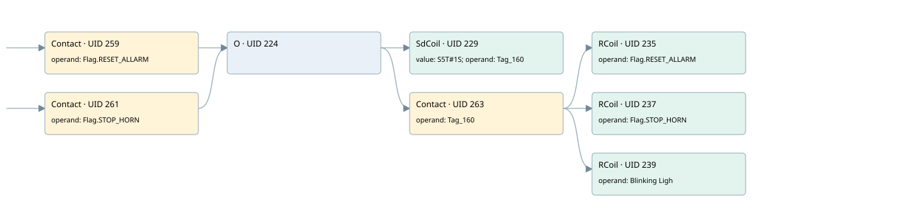

com_w3 bit8 (reset_allarm)
allarm manager · 검색 색인 순서 5 · 원본 내부 NID 추정 4
백업 PLF 원본의 2644538 바이트 위치에서 복원한 XML. 검색 문서 931의 객체 키 16102200780f000000000000와 연결했다. 이름 해석 8/8개. 남은 RefId는 상수 또는 미해석 참조다.
연결 구조 다시 그리기
원본 Part/PCon/Wire를 이용한 연결도다. TIA 화면의 래더 배치 또는 실행 결과를 재현한 그림은 아니다. 핀 연결은 아래 표와 원본 XML을 기준으로 읽는다. 노드 위에 마우스를 두면 피연산자 이름을 볼 수 있다.

접점·코일·블록과 피연산자
| Part UID | Gate | Negated 핀 | 연결 피연산자 |
|---|---|---|---|
| 259 | Contact | operand = Flag.RESET_ALLARM | |
| 261 | Contact | operand = Flag.STOP_HORN | |
| 224 | O | ||
| 229 | SdCoil | value = S5T#1S; operand = Tag_160 | |
| 263 | Contact | operand = Tag_160 | |
| 235 | RCoil | operand = Flag.RESET_ALLARM | |
| 237 | RCoil | operand = Flag.STOP_HORN | |
| 239 | RCoil | operand = Blinking Ligh |
접점 경로를 펼친 조건식
Contact·O/A·비교기의 원본 연결을 읽기 쉽게 펼친 보조 해석이다. POWER는 전원 레일 시작을 뜻한다. 호출 블록·에지·타이머의 내부 동작과 다중 쓰기 순서는 이 표로 실행 검증하지 않았다. 미해석 핀과 RefId는 원문 연결표에서 확인한다.
| UID | 동작 | 대상 | 원본 접점 경로 | 내용 |
|---|---|---|---|---|
| 229 | SdCoil | Tag_160 | (Flag.RESET_ALLARM OR Flag.STOP_HORN) | 시간 동작 SdCoil; 타이머 의미 추가 확인 / 시간 인자 S5T#1S |
| 235 | RCoil | Flag.RESET_ALLARM | ((Flag.RESET_ALLARM OR Flag.STOP_HORN) AND Tag_160) | 조건 성립 시 Reset |
| 237 | RCoil | Flag.STOP_HORN | ((Flag.RESET_ALLARM OR Flag.STOP_HORN) AND Tag_160) | 조건 성립 시 Reset |
| 239 | RCoil | Blinking Ligh | ((Flag.RESET_ALLARM OR Flag.STOP_HORN) AND Tag_160) | 조건 성립 시 Reset |
원본 배선 연결
| Wire UID | 동일 Wire 연결 끝점 |
|---|---|
| 265 | Powerrail {} ↔ Part 259.in ↔ Part 261.in |
| 249 | ORef 241 (Flag.RESET_ALLARM) ↔ Part 259.operand |
| 260 | Part 259.out ↔ Part 224.in1 |
| 250 | ORef 242 (Flag.STOP_HORN) ↔ Part 261.operand |
| 262 | Part 261.out ↔ Part 224.in2 |
| 258 | Part 224.out ↔ Part 229.in ↔ Part 263.in |
| 251 | ORef 243 (S5T#1S) ↔ Part 229.value |
| 252 | ORef 244 (Tag_160) ↔ Part 229.operand |
| 253 | ORef 245 (Tag_160) ↔ Part 263.operand |
| 264 | Part 263.out ↔ Part 235.in ↔ Part 237.in ↔ Part 239.in |
| 254 | ORef 246 (Flag.RESET_ALLARM) ↔ Part 235.operand |
| 255 | ORef 247 (Flag.STOP_HORN) ↔ Part 237.operand |
| 256 | ORef 248 (Blinking Ligh) ↔ Part 239.operand |
식별자 해석 근거 8개
| ORef UID | RefId | 이름 | IdentXmlPart 파일 | 해석 방법 |
|---|---|---|---|---|
| 241 | 2 | Flag.RESET_ALLARM | 0565-IdentXmlPart.xml | UID/RID + search-text + NID agreement |
| 242 | 4 | Flag.STOP_HORN | 0565-IdentXmlPart.xml | UID/RID + search-text + NID agreement |
| 244 | 38 | Tag_160 | 0567-IdentXmlPart.xml | UID/RID + search-text + NID agreement |
| 243 | 37 | S5T#1S | 0566-IdentXmlPart.xml | literal candidate: UID/RID/NID + nearby named declarations + search-text agreement |
| 245 | 38 | Tag_160 | 0567-IdentXmlPart.xml | UID/RID + search-text + NID agreement |
| 246 | 2 | Flag.RESET_ALLARM | 0565-IdentXmlPart.xml | UID/RID + search-text + NID agreement |
| 247 | 4 | Flag.STOP_HORN | 0565-IdentXmlPart.xml | UID/RID + search-text + NID agreement |
| 248 | 39 | Blinking Ligh | 0567-IdentXmlPart.xml | UID/RID + search-text + NID agreement |
검색 코드 보조 자료
참조 명칭을 찾기 위한 자료이며 실행 순서나 AND/OR 관계는 위 연결표로 확인한다.
"flag".reset_allarm "tag_160" s5t#1s "flag".stop_horn "tag_160" "flag".reset_allarm "flag".stop_horn "blinking ligh"